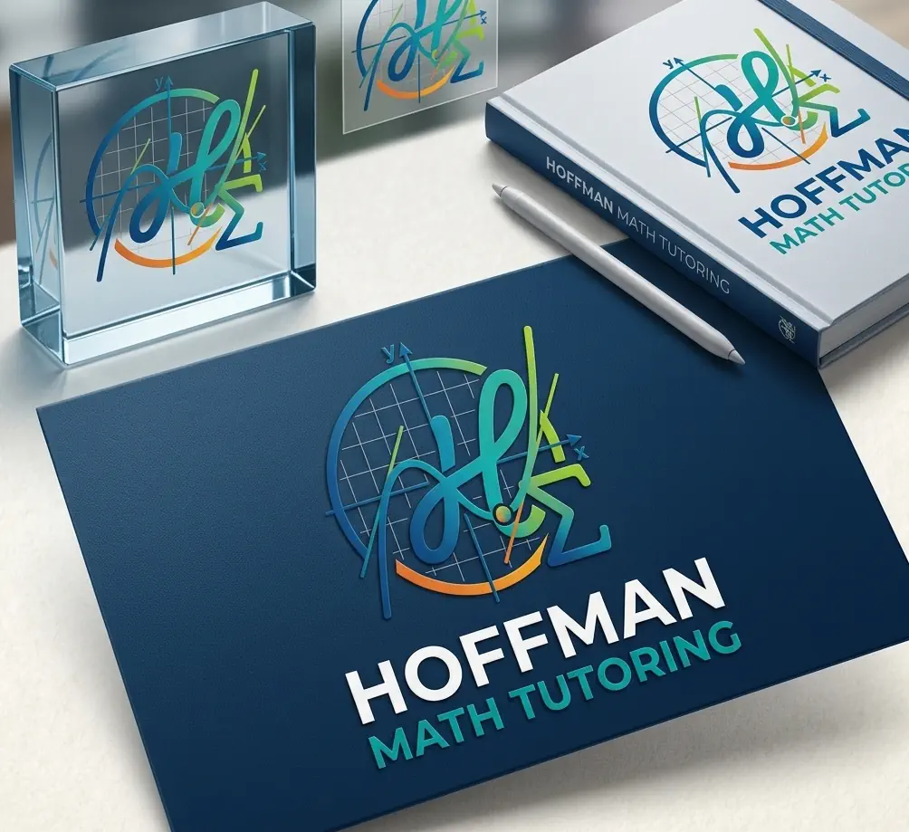

Let's Take Math Steps Together For Success
At Hoffman Remote Learning, you work directly with me—not a large tutoring company assigning you to someone else. As a certified math teacher in several states with over fourteen years of classroom and remote teaching experience, my instruction helps middle school, high school, and homeschool students build real confidence in math and make sure that all students have what they need to succeed in college or any math-related occupation.
Whether your student is in a traditional classroom or learning at home, we start by finding out what they already know and pinpointing where they need help so we focus on what matters most. I adapt each session to fit your student's curriculum and pace, keeping parents informed on progress along the way. All tutoring sessions are scheduled, conducted, and billed through Wyzant for easy billing and convenience.
My personalized online instruction supports middle school, high school, and homeschool students, working right alongside their school classes or homeschool programs. I use diagnostic checks to spot gaps early so we can focus on what actually needs to be learned. Step by step, we strengthen core skills and build lasting understanding so students are confident in their daily lessons, quizzes, and tests. Click one of the buttons below to schedule a session through Wyzant.
Steady, structured math instruction for homeschool students that complements your curriculum and gives parents reliable support.
One-on-one support for middle and high school math, from Pre-Algebra to Algebra and Geometry, all aligned with schoolwork.
Practical review and problem-solving strategies to ease test stress and prepare for classroom quizzes, unit exams, and state assessments.
Targeted work to fill learning gaps, sharpen arithmetic and algebraic habits, and help students move forward with confidence.
Founder
Hi, I am the founder of Hoffman Remote Learning. I graduated summa cum laude from the University of Missouri with a Bachelor's degree in mathematics, and my career has consistently focused on helping students succeed in math.
I have extensive experience teaching and tutoring secondary students from 6th grade through high school. My background includes middle school math, advanced eighth-grade Pre-AP Algebra, and the full high school sequence of Algebra 1, Geometry, Algebra 2, Trigonometry, and Pre-Calculus.
My classroom experience includes five years of teaching in Dallas, Texas, and seven years in Missouri. After transitioning from full-time classroom instruction, I spent years remotely teaching and tutoring for school districts throughout the United States, partnering with various companies to supply quality instruction.
Today, as the owner of Hoffman Remote Learning, I bring that diverse background directly to your family—helping students master challenging concepts and prepare for whatever comes next.
Knowledgeable and Patient Teacher
"Outstanding Math tutor and Mentor." William has been truly wonderful for my son, Lucas. He has not only helped him strengthen his math skills but has also given him more confidence and helped him achieve a high score on his math placement for the IB program. He has done a fantastic job reviewing Algebra 1 and is now moving into geometry. What has meant the most to us is that William is so much more than a tutor. He is genuine teacher who has helped Lucas learn to focus, work through challenges, and really understand the logic and structure of math. His patience, dedication, and ability to connect with Lucas have made a real difference. We are especially grateful that William will continue working with Lucas during the school year, as his guidance and input are so valuable. We could not be more thankful for his support and would highly recommend him to any family.
"Knowledgeable and patient teacher." We are very impressed with the tutor's teaching approach and materials. The materials prepared were of great quality. My child has not only learned a lot but has also developed a deeper interest in the subject!
"Excellent Geometry Tutor." William was an excellent geometry tutor for my daughter. He was patient, knowledgeable, and explained every concept in a way that was easy for her to understand. She consistently commented on how clear his explanations were, which really helped build her confidence and improve her understanding of the material. He was always professional, supportive, and willing to answer questions until she fully grasped the topic. I highly recommend William to anyone looking for a knowledgeable and effective math tutor.
"Excellent teaching methods." Explained concepts perfectly and then confirmed understanding through demonstrated knowledge in applying them to problems. We will definitely continue to work with William.

Have a question about math tutoring or scheduling? Send me a message below. Your contact information is used only so I can respond to your inquiry.
1-on-1 Remote Online Sessions
Scheduling and billing through Wyzant.